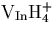
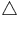
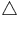
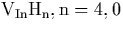
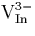
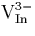
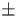

Next: Definitions and Notation
Up: Chris Ewels' PhD Thesis
Previous: List of Tables
- Schematic diagram showing Czochralski Si growth. (1) SiO2
crucible, (2) Carbon susceptor, (3) Graphite Heater, (4) Single
crystal Si. Note that the crystal and crucible are rotated in
opposite directions. More than 99% of dissolving oxygen is lost as SiO.
- Schematic diagram showing the principle of the local density
approximation and also Thomas Fermi theory, namely that for a given
radial slab, dr, the local charge density can be considered to be
n(r), the density of an equivalent uniform homogeneous electron gas.
- The 4s (full) and pseudo- (dashed) radial wavefunction
(in atomic units) for the Ni atom.
- Schematic diagram showing terms included in the Musgrave
Pople potential
- Clusters used in the InP work. (a) 134 atom containing , (b) 88 atom cluster
containing H passivated Be
- Calculated Phonon Dispersion Curve for InP.
 =Koteles et al [65],
=Koteles et al [65],  =Hilsum
et al [64], =Borcherds et
al [63]
=Hilsum
et al [64], =Borcherds et
al [63]
- Schematic diagrams showing . The
tetrahedral symmetry is shaded in
 .
. - Top Kohn-Sham eigenvalues of the hydrogenated vacancies,
(a) , (b)
 , (c)
, (c)  , (d)
, (d)
 , (e) . Filled boxes indicate
electrons and empty boxes indicate holes. The eigenvalues have been
arbitrarily shifted to align the highest filled level below the
t2-like state with zero.
, (e) . Filled boxes indicate
electrons and empty boxes indicate holes. The eigenvalues have been
arbitrarily shifted to align the highest filled level below the
t2-like state with zero.
- Calculated structure for H passivated Be in InP (bond
lengths in Å). Black dots mark ideal lattice positions.
-
The OV centre in Si. The box indicates the [100] directions.
- The O2V centre in Si. The box indicates the [100]
directions.
- The OV2 centre in Si. The box indicates the [100]
directions. The two central dots mark the vacant lattice Si sites.
- The O3V centre in Si. The box indicates the [100]
directions.
- The OV-Oi centre in Si, pre-cursor to the O2V. The box
indicates the [100] directions.
- Schematic of interstitial oxygen in silicon. For explanation
of the labelling, see text.
- Structure of Oi, bond lengths in Å. Dots mark the ideal
lattice sites.
- Atomic motion associated with each vibrational mode for the
oxygen interstitial (modes in cm-1) (see
Table 6.3).
- The stable assymmetric dimer in silicon (lengths in Å).
- Atomic motion associated with each vibrational mode for the
assymetric dimer (modes in cm-1). The top two modes roughly
correspond to the assymetric stretch for the inner and outer O atoms
respectively, the lower modes are wag modes. The 593 cm-1 mode
is largely localised on the core Si atoms and hence shows little shift
with oxygen isotope, in agreement with experiment.
- Schematic diagram of a possible alternative dimer model that
should show no mixed isotope vibrational mode coupling. The atoms sit
bond centred, on opposite sides of the hexagonal interstitial site.
- The symmetric dimer in silicon (lengths in Å). This is
0.259 eV higher in energy than the assymetric dimer. Black dots mark
the ideal lattice sites.
- The split dimer configuration, i.e. two Oi atoms with an
empty Si-Si bond between them. All bond lengths in Å. This
structure is less stable than the puckered dimer structure.
- A saddle point for oxygen dimer diffusion. This structure is
1.36-1.76 eV higher in energy than the stable puckered dimer
structure. Black dots mark ideal lattice sites
- Time taken for a single Oi to hop from one bond centred site to
another at varying temperature. Calculated using
 where the distance between sites, x, comes from AIMPRO cluster
calculations and is set to 3.639Å.
where the distance between sites, x, comes from AIMPRO cluster
calculations and is set to 3.639Å.  .
. - The initial changes of the bands 975-1012 cm-1 and
[Oi] for annealing at (a) 370
 C (top) and (b) 450C
(bottom). Taken from Reference [239]. In the
450C run, the 975 cm-1 signal was too weak for inclusion,
and has a maximum that appears and disappears too quickly to appear on
this scale.
C (top) and (b) 450C
(bottom). Taken from Reference [239]. In the
450C run, the 975 cm-1 signal was too weak for inclusion,
and has a maximum that appears and disappears too quickly to appear on
this scale.
- The initial changes of the 1006 and 1012 bands during the
adjustments to their respective equilibrium levels and the growth of
TD+1 (1s-3p) for an as-grown sample and a dispersed sample (2h at
1100C). Note that the TD data applies to the r.h.axis, and
the 1006/1012 data to the left, hence the initial dispersed 1006 level
is almost zero. Taken from Reference [239].
- The `manx' oxygen trimer in silicon. The top diagram shows
the view along the
 111
111 , C3 symmetry axis.
, C3 symmetry axis.
- The linear chain trimer in silicon; dots mark ideal Si
lattice sites.
- The N-pair defect in Si. Vertical direction is 001 ,
horizontal is 110
- Absorbance spectrum observed after annealing at
650C for 1 hour, of samples with various combinations of
14N, 15N, 16O and 17O. In all cases the total N
and O doses are equal. Data obtained by Berg Rasmussen et al
[103]
- The alternative `Humble Ring' model of NNO. This was
discarded since it did not match experimental data.
- Structure of the NNO defect. All bond lengths in Å.
- The NiOi defect in the neutral charge
state. Lengths in Å, angles in degrees.
- The NiOi defect in the +1, neutral, and -1 charge
state. The core Si atom has a p-type orbital in the plane of the
defect that is empty in the +1 charge state. This is partially and
fully occupied in the neutral and -1 charge states respectively, which
is reflected in the change in bonding character.
- Kohn-Sham wavefunction for the partially occupied level of
NiOi in the neutral charge state. Note that the diagram is
reversed from the ball and stick diagrams, i.e. the O atom is on
the right of the plot. The wavefunction lies primarily on the core Si
atom, and is localised on the side away from the Oi atom.
- The NNOO defect.
- The core structure of the +1 Ni-O2i defect. All bond
lengths are in Å. N atoms are dark grey, O atoms light grey, black
dots mark the ideal lattice sites.
- Top Kohn-Sham eigenvalues for neutral Ni, NiOi, and
NiO2i. Filled (empty) boxes denote electrons (holes). These
have been scaled to the experimental 1.16 eV band gap.
- The pseudo-wavefunction ( 100 a. u. ) of the highest
occupied orbital of neutral Ni-O2i. Note that it has little
amplitude on N and is localised on the Si radical. There are nodal
surfaces lying between this atom and the O atoms demonstrating
anti-bonding behaviour.
- Structure of the proposed VOsNs defect. This does not
have the required bonding or gap states to behave as a shallow donor
defect. The cube marks the (100) directions, corners on ideal lattice
sites. The N-O distance in Å.
- Structure of the proposed bistable NON(+) defect core.
Arrows show approximate movement of Ni and Oi atoms from the
electrically inactive NNO defect structure.
- The (C-H)i-O2i `C2v' defect core in the +1 charge
state. Numbered atoms are referred to in the text. Symmetry with H
included is C1h (see text). Black dots mark the ideal lattice
sites. This is less stable than the assymetric structure in
Figure 8.7. The cross-hatched H atom lies
perpendicular to the defect plane.
- The (C-H)i-O2i defect with O2i neighbouring
(CH)i, in the neutral charge state. Numbered atoms are referred to
in the text. This structure is 1.36 eV more stable than its
equivalent with one O atom on either side of the (CH)i unit. Black
dots mark the ideal lattice sites.
- The neutral (CH)i-O4i defect (bond lengths in Å).
Black dots mark ideal lattice sites, black is carbon, light grey
oxygen, with the C-H bond perpendicular to the plane of the diagram.
- Structure of (CH)i-O4i in the +1, 0 and -1 charge
states. Black dots mark ideal lattice sites. The neutral and +1
charge state structures are almost identical and so the neutral
diagram has not been included seperately. In the -1 charge state the
oxygen pair on one side bow out of the defect core, removing the
elecrostatic compression on the core Si atom; this shifts off site to
localise the deep gap state on its p-type orbital.
- Kohn-Sham eigenvalues for (CH)iO4i in the +1,
neutral, and -1 charge states, showing its shift from a shallow to a
deep level defect. The eigenvalues have been aligned and scaled to
the experimental Si band gap of 1.16 eV.
- Schematic diagram of the `di-oxygen square' model for the
thermal donor, as proposed in [#snyder_89b##1###]. This structure
was found to be lower energy than the di-y-lid structure.
- Schematic diagram of the OSB model for the thermal donor
[#ourmazd_84##1###]. The diagrams show the same defect along
perpendicular directions. The bottom Si atom is a lattice atom displaced
a long way from its original site.
- Schematic diagram of the Deák / Snyder / Corbett thermal
donor model containing two trivalent Oi atoms and a Sii
[253].
- The core of the di-y-lid thermal donor. Bond lengths are in
Å, bond angles are in degrees. Si atoms are white, O atoms are
grey. Black dots mark the ideal Si lattice sites.
- The top Kohn-Sham eigenvalues for the 4Oi di-y-lid model for the
thermal donor. Charge state of the defect is given beneath each
column. Black boxes denote filled state, white boxes for empty
states. The eigenvalues have been arbitrarily scaled to the
experimental band gap of 1.16eV.
- Cross-sections through the Kohn-Sham wavefunction for the
donor state of the di-y-lid thermal donor model in the +2 charge
state. Vertical direction is 001 , horizontal direction is (a)
110 , (b) 110 .
- Side view of the 4Oi atom di-y-lid TD. This shows the complete
cluster except for the surface hydrogen atoms. The oxygen atoms are
shown in black.
- Overhead view of the 4Oi atom di-y-lid TD. This shows the complete
cluster without surface H atoms. The tensile stress in the 110
and 110 is visible in the distortion to the lattice.
- Displacement of the core atoms associated with each
calculated LVM (given in cm-1). Vector length has been
exaggerated for clarity. Overhead views of the 751 and 745 cm-1
modes have been displaced slightly off axis so that it is possible to
separate the vectors due to the O and Si atoms in the core. Stronger
modes are given in bold.
- The top Kohn-Sham eigenvalues for various alternative thermal
donor models, all in the +2 charge state. Black boxes denote filled
state, white boxes for empty states. The eigenvalues have been
arbitrarily scaled to the experimental band gap of 1.16eV. Structures
are 3Oi species (a) Snyder/Stavola, (b) Partially dissociated
trimer, 4Oi species (c) `Flanked square' model, (d) Di-square
model, (e) 5Oi STD analogue, and (f) 6Oi di-y-lid with dimer in
central Si-Si backbonds.
- The core of the 5O thermal donor model. Bond lengths in Å,
angles in degrees. Symmetrically equivilent bonds have not been
marked with lengths or angles. Si atoms are white, O atoms are grey.
The difference between the central y-lid and its two neighbours can be
seen in the bond lengths.
- The core of the alternative 4O `flanked square' thermal donor
model. Bond lengths are in Å, bond angles are in degrees. Si
atoms are white, O atoms are grey. Symmetrically equivilent bond
lengths and angles have only been marked once.
- The core of the Snyder/Stavola 3O thermal donor model
(lengths in Å). Black dots mark ideal Si lattice sites, showing the
[001] compression and [110] lattice tension. The deviation from
C2v symmetry saves 0.063 eV over the relaxed C2v symmetric
structure.
- An alternative 3O thermal donor model similar to the di-y-lid
but missing an end Oi; the trivalent O in the pair is stabilised by
the presence of the neighbouring Oi.
- The top Kohn-Sham eigenvalues for the NL10(Al) Al/di-y-lid
model, AlsO4i. Defect is in the +1 charge state. Black boxes
denote filled state, white boxes for empty states. The eigenvalues
have been arbitrarily scaled to the experimental band gap of 1.16eV.
- The proposed NL10(Al) structure, consisting of the di-y-lid
structure with the core Si atom replaced by Al (cross-hatched atom).
All bond lengths in Å, black dots mark ideal Si lattice sites.
Chris Ewels
11/13/1997